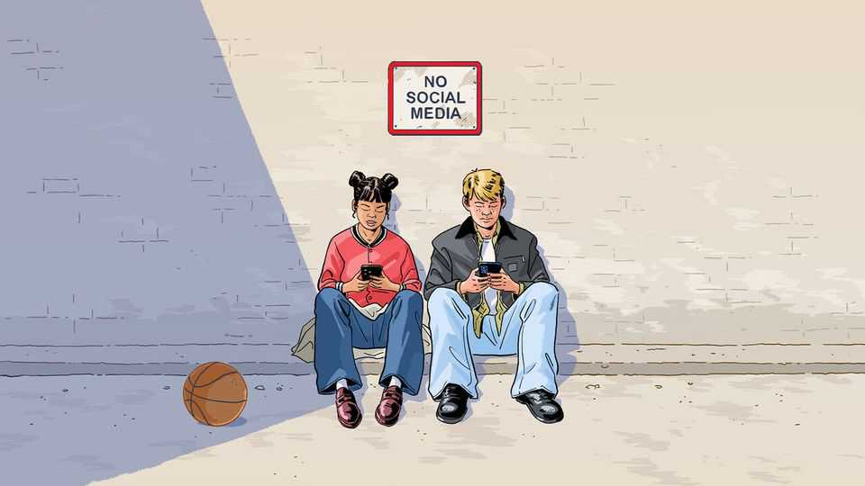
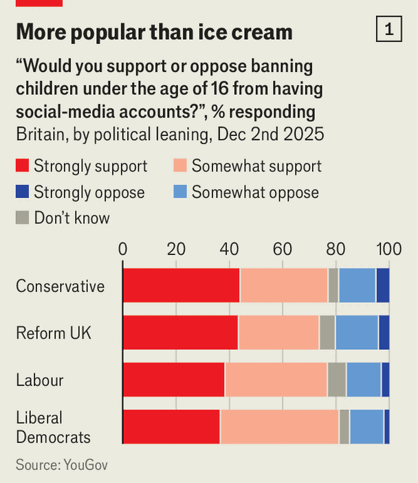
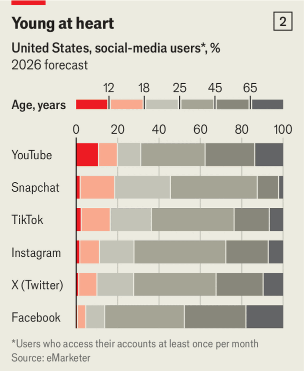

Briefing | Social outcasts
More and more countries are banning kids from social media
But the case for bans is weak and the benefits are uncertain
February 12th 2026

“You scroll without thinking and lose track of time,” admits Ramón, a Spanish 15-year-old, of his habits on social media. “You see girls sexualising themselves, car crashes, really violent stuff,” he continues. “Everyone I know sees that kind of content.” At school, in particular, he thinks, social-media use “really messes with your head and with your attention”.
Yet the Spanish government’s plan to bar children under 16 from social media, announced earlier this month, leaves Ramón cold. His contemporaries would easily find ways around it, he thinks. His mother agrees. And given that children will inevitably be on social media one way or another, she would rather the government try to curb the most harmful effects through regulation: “A blanket ban sounds strong, but in reality it pushes teenagers towards riskier, more secretive use.”
It is not just the Spanish government that is worried about kids and social media. Australia outlawed social-media accounts for children under 16 in December. The second chamber of Britain’s Parliament voted for similar restrictions in January, as did the lower house of France’s. Austria, the Czech Republic, Denmark, Greece, Indonesia, Malaysia and Norway, among others, are eyeing bans. Brazil will require age verification on social apps from next month. China, which had previously imposed curfews on young gamers, introduced optional screen-time limits for children on social media in 2019. Several states in America have restricted access for younger teens; others are regulating in different ways. California will soon curb algorithmic feeds for minors, for instance. America’s courts are also busy: on February 9th arguments began in two landmark trials, of Meta and YouTube over their apps’ supposed addictiveness and of Meta over whether its platforms do enough to protect children from online predators.
This wave of legal constraints will mark a big change in the lives of teenagers, who spend an average of nearly five hours a day on social apps in America, for instance, and use them for everything from forming relationships to doing their homework. It also threatens to rock an industry that generates hundreds of billions of dollars a year in ad revenue. But implementing new rules, as Ramón and his mother predict, will be trickier than their advocates imagine. Already, some unintended consequences are becoming obvious.
For years the minimum age for most social platforms has been 13. This limit was widely adopted after America passed COPPA, a law to protect children’s privacy online, in 1998. It is widely ignored by users and all but unpoliced by social-media firms, most of which ask new members if they are old enough and largely take their word for it. Though the platforms insist that they weed out underage users, they seem to do a staggeringly bad job of it. Surveys by Britain’s tech regulator, Ofcom, find that among children aged 10-12, over half use Snapchat, more than 60% TikTok and more than 70% WhatsApp. All three apps have a notional minimum age of 13.
Governments that used to turn a blind eye to such practices have now decided that social media are “doing social harm to our children”, as Anthony Albanese, Australia’s prime minister, puts it. The most urgent concern is that social apps provoke depression and enable predators, leading in extreme cases to suicide or abuse. Books such as Jonathan Haidt’s “The Anxious Generation” have persuaded many that smartphones and social media are rewiring childhood in a malign way. If nothing else, social-media apps consume huge amounts of children’s time, which lots of parents would like to see put to different uses.
Some researchers have proposed a new medical condition called “social-media use disorder”, modelled on existing diagnoses for addiction to gaming and gambling. The suggested criteria include loss of control over the urge to use the apps, persistent distress about use and neglect of essential functions (sleep, self-care and contact with friends and family) and obligations (homework and appointments). A study of 11- to 15-year-olds in 27 European countries and Canada based on survey data from 2017-18 found a 7% prevalence of such troubling dependence on average, ranging from 3% in the Netherlands to 14% in Spain.
Research suggests that social media are making things worse for children who are more vulnerable to begin with. The majority of children who are bullied online are also bullied in the real world; the bullies are often the same in both settings. A study of 17- to 25-year-olds struggling with their mental health found that getting them off social media for three weeks resulted in a small improvement in their well-being.
Whether social media are harmful for the average child is less clear-cut. A recent review of research led by Amy Orben of Cambridge University found consistent evidence of a small correlation between the amount of time spent on social media and the incidence of mental-health problems such as depression and antisocial behaviour. But most studies rely on subjects’ own reports of their social-media use, which tend not to be accurate (it’s better to install automatic trackers on devices). Many researchers therefore question the results.
Above all, researchers think the amount of time children spend on social media may not be especially relevant to mental health. What probably matters far more is what they do on the apps (are they mostly chatting with friends, for example?), the context (are they scrolling in the middle of the night?) and what content the apps’ algorithms show them. Untangling this complexity requires access to detailed data at the level of individual users, something tech firms seldom disclose.
As social-media apps evolve rapidly, with all sorts of new features and AI-enhanced algorithms, research struggles to keep pace. Getting funding for a rigorous study and setting it in motion can take years. “TikTok became really popular with adolescents in the last two-to-three years,” says Victoria Goodyear of the University of Birmingham. “The research field is just about to start catching up with that trend.”

Whatever the shortcomings of the research, voters seem convinced. Last year Ipsos, a polling firm, asked people in 30 countries whether under-14s should be excluded from social media. A majority was in favour in every single country. The policy commands support across demographic and political divides like few other issues. Supporters of all four of Britain’s biggest political parties, for instance, overwhelmingly favour a ban for under-16s (see chart 1). Even in ultra-polarised America both Republicans and Democrats love the idea. Politicians are pushing at an open door.
Translating this support into law is not entirely straightforward, however. The first difficulty is deciding what to ban. Australia has excluded messaging platforms such as iMessage and WhatsApp, prompting complaints from Snapchat, which claims its Australian users spend three-quarters of their time on the app messaging or making calls. (It has fallen foul of the ban owing to additional features such as a video feed.) Some parents are already lobbying for video games to be included in the ban, since online games like Roblox allow social interactions with friends and strangers. YouTube, which initially expected to be let off on the strength of its educational content, was included in the end. Some apps that are not formally included have introduced age checks. Substack, a newsletter and blogging platform, has begun age-gating some of its features in Australia and Britain, citing new content laws.
Ascertaining users’ age is the next challenge. To avoid challenging every existing customer, most of whom are adults, social firms in Australia have begun by locking out users whom they believe to be under 16. Some have been identified after giving their date of birth. Others are suspected based on analysis of their behaviour, including the people they follow and the content they interact with. Meta has deployed artificial intelligence to help identify users who are younger than they claim to be. But given that, in Britain, more than a third of 10- to 12-year-olds claim to be on Instagram, in breach of its rules, it seems to be far from foolproof.
Those who are suspected of being too young get a chance to prove their age. Facial scans are one method. Again, AI has helped: Yoti, which provides age estimates for firms like Meta, says that AI is better at guessing age than the average human. But AI has inherited human biases from its training data: Yoti can guess the age of a white teenage boy to within less than ten months, but when faced with a dark-skinned girl is typically out by a year and a half, its figures show. Australian teens are in any case finding ways to fool the robot estimators, from pointing their cameras at an older friend to scrunching up their faces to look wrinkly. “Appetite to comply is low,” admits a weary tech executive.
If other methods fail, users can prove their age by uploading personal documents. This comes with risks. In October Discord, a social platform, announced that one of its customer-services partners had been hacked, giving the perpetrators access to a trove of photos of IDs, usernames, email addresses and billing information. Malaysia is mulling plans to make people submit an ID when they register for a social-media account. The government defends the proposal with talk of protecting children and stopping fraud, but civil-liberties groups suspect it has other reasons to ask the identity of those behind anonymous social-media posts.
Tech companies are arguing about who should bear the burden of checking ages. Some social-media platforms argue that age-checking should be done not by them but at the level of the hardware used for access. The idea is that phone or computer operating systems—typically made by Apple, Google or Microsoft—would verify the owner’s age, and after that anonymously vouch for their eligibility to look at social networks, porn sites, gambling platforms or whatever other age-restricted entertainment they chose. These firms retort that the companies responsible for creating the alleged harms should bear the burden of mitigating them, and point out that many computers are shared by multiple users of different ages. While the argument goes on, age-verification companies are stepping in to fill the gap. AgeKey, a product used by Meta and others, verifies people’s age via a facial scan or uploaded documents, and then vouches for them when they request age-restricted services.
It is too early to say how well Australia’s ban is working. The government notes that within a few days of the ban 4.7m accounts were deactivated, a big number given that there are only 2.5m children aged 8-15 in the country. Others believe many accounts have been missed. Some 95% of teens at the upper end of that age bracket use at least one site, the government previously found. Many use more than one, and some have multiple accounts on the same platform (one to show the parents, another for friends). What is more, some of the accounts caught in the dragnet were inactive, insiders say. The upshot is that, despite the 4.7m deletions, many young people still seem to be on social media. “Everyone I know probably found a way around the ban and it hasn’t really changed much,” declares a 14-year-old in Melbourne.
People worried that teens would get around the bans using virtual private networks (VPNs), software which makes it look as if the user is in another country. VPNs rocketed in popularity in Britain last summer after a new law required age checks on porn sites. But Apptopia, a data company, says that by the end of January use of the ten most popular VPN apps in Australia was only about 10% higher than in the weeks before the ban. Nor do kids seem to have simply migrated to smaller social networks. In the days after the ban apps such as Lemon8 and Coverstar saw big increases in downloads. But Apptopia says that their download and usage numbers have since subsided to their previous levels. Network effects may be making it hard for Australian teens to relocate their social circles en masse.
Some children may instead move to other types of platform that are not covered by bans, such as messaging apps and gaming services. The trouble is that the most serious online threats will follow them. “The problems of bad actors and criminality won’t disappear. They will simply migrate to where children go,” predicts Andy Burrows, chief executive of the Molly Rose Foundation, a campaigning group set up in memory of a 14-year-old British girl who was found to have committed suicide in part because of exposure to depressive content on Instagram. Mr Burrows, who previously worked to curb child sexual abuse, argues that the most dangerous platforms for children—encrypted messaging apps, gaming platforms and other online communities—are those not covered by most social-media bans. “As someone who…has seen some of the darkest stuff that you could imagine, that is the threat that keeps me up at night more than anything else,” he says.
That is one reason why many child-welfare groups, perhaps surprisingly, oppose blanket bans. The Molly Rose Foundation is one of 42 signatories, including the National Society for the Prevention of Cruelty to Children, of a public letter in Britain arguing against one there. As well as creating a false sense of security, they argue, such bans create a “cliff-edge” for 16-year-olds, who would be let loose on unadulterated apps with no experience of social media. “Are you teaching kids to swim, or are you throwing them in the deep end when they turn 16?” asks Kathryn Modecki of the Kids Research Institute Australia.
Rather than excluding children, pressure groups say, tech firms should be forced to do the harder work of making their platforms more child-friendly. Instagram, TikTok and YouTube, among others, have introduced “teen accounts”, which provide safety features such as screened content and warnings about excessive usage. The Australian ban makes no allowance for such products, and so undermines any incentive to develop and improve them. Even platforms without explicit kids’ versions tend to tailor content to the user, and therefore might serve teenagers different material from adults. But that works only if the user is logged into their account. Children in Australia are now banned from having accounts, but they can still use social-media platforms without logging in. That means that they see an unfiltered feed.
No system is completely watertight. China, unsurprisingly, has some of the strictest rules about kids on social media in the world. The authorities have developed an elaborate “minor mode” that can be activated on most devices. This allows access only to child-friendly versions of apps, restricts the amount of time that can be spent on them and prevents users getting online altogether at night. Content for minors is further stratified into five bands appropriate to their age. Under-16s are not allowed to live-stream themselves, among other things.
Yet adoption of the voluntary elements of all this is low and workarounds for the compulsory features are common. China has a huge industry promising miracle cures for teens addicted to screens, despite two decades of restrictions on gaming and social media. Parents posting images of the screens they have smashed on their children’s devices in despair is something of a meme in China, ironically enough. And kids and tech firms have discovered a loophole in the form of smartwatches, which are subject to less stringent regulation and so have begun to offer their own addictive social networks and games. Chinese regulators, naturally, are promising to crack down on tiny screens, too.

Few Western countries will go so far. But as age limits spread, tech firms are assessing the impact on their business. They stand to be unevenly affected: whereas only one in 20 Facebook users is under 18, one in five Snapchat users is, according to estimates in America by eMarketer, a research firm (see chart 2). The youngest users are not all that valuable to advertisers. Since 2023 a dispute with regulators has prevented Meta from showing ads to under-18s in the EU, its second-largest market, but there has been no visible impact on its bottom line. On a recent earnings call Snapchat’s management acknowledged that Australia’s ban had contributed to a drop in users, but said that ad revenue from under 18s was “not material”.
Yet no platform wants to lose its youngest users. For one thing, teen adoption leads to more valuable adult use later on. It remains to be seen whether people who are banned from signing up for social networks in their early teens will have cooled on the idea by the time they are old enough. What is more, tech firms recognise that trend-setting teenagers are important drivers of popular culture, not to mention creators of well-watched content. Charli D’Amelio, an amateur dancer, became TikTok’s most-followed person when she was 15.
The bigger risk to tech companies—and the great prize for their detractors—is that the movement to regulate social media may yet result in more intrusive kinds of regulation that govern how apps treat adults as well as children. The EU is already pushing in this direction: on February 6th a preliminary ruling from the European Commission found TikTok in breach of its Digital Services Act over its “addictive design”, citing features including its infinite scroll, autoplay, push notifications and personalised recommendations—all critical ingredients of the app’s success. After years of agonising about apps’ content, regulators suddenly also seem concerned with their design, a potentially more awkward approach for tech firms since it is both more central to their offerings and is harder to shrug off with talk of free speech.
Mr Burrows argues that social-media companies should be regulated more like financial-services firms, with obligations to disclose more information and to notify regulators before launching new features or products. Such protections, he suggests, might have reined in X’s Grok chatbot, which is under investigation by Ofcom for creating nude images of both adults and children without their knowledge or consent. After all, if social media are inflicting widespread harm on teenagers, it is hard to imagine that the damage stops at 16. ■